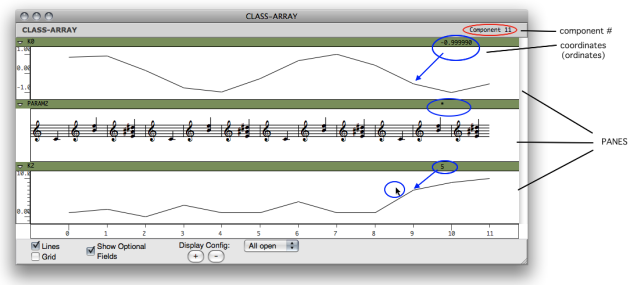
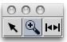
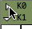
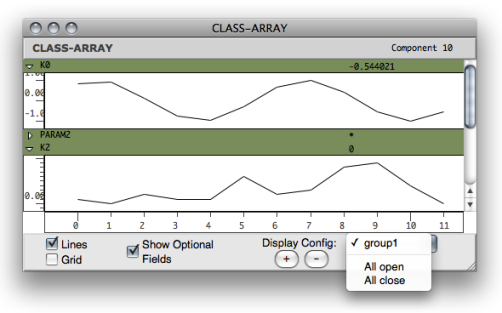
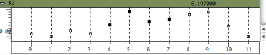

OpenMusic DocumentationHiérarchie de section : OM 6.6 User Manual > Basic Tools > Array > Class-Array Editor
OpenMusic DocumentationHiérarchie de section : OM 6.6 User Manual > Basic Tools > Array > Class-Array Editor
Navigation : page précédente | page suivante
Attention, votre navigateur ne supporte pas le javascript ou celui-ci à été désactivé. Certaines fonctionnalités de ce guide sont restreintes.
Class-Array Editor
The class-array ****** editor** allows to visualize and edit – to a certain extent – the contents of a class-array object.
General Features

The class-array editor.Zoom
{kind=link}
In the class-array editor, rows are represented by a set of horizontal panes.
These panes can be :
- BPF -like views , if the component values are numbers
- list views , if the components are other types of objects or values .
The following values can be displayed at the top of the editor by hovering the mouse over a component :
- the number of the current component
- the values related to this component for each of the fields, such as coordinates, if values are available.
Displaying Options and Configuration
Palette
To zoom in/out on a selected region – a components subset – : use the |

|
Options
All the fields of a simple class-array are user-defined. Consequently, all the rows of such arrays are hidden if this option is unchecked. Subclasses of class-arrays with "predefined" fields may remain visible. |
{kind=link}
Rows Configuration
|  | Each row can be hidden or shown with a click on the triangle icons located on the upper left corner of each pane. |
To save, recall or remove a given configuration, use the + and - buttons at the bottom of the editor.
To select a configuration, use the adjacent pop up menu, which contains all available or recorded configurations.

Edition
BPF-Like Rows
BPF -like rows offer some of the possibilities of BPF editors :
- hiding / showing lines
- moving points, in order to change the value(s) of the corresponding components.
Points cannot me removed.

List Rows
List rows display the contents of every components, with various types of representations depending on the type of data.
Objects with an editor – BPFs , score objects, arrays, etc.– can be open by a double click and edited individually.
Limits of Array Editors
A big array may not represent all of its internal component values, in which case the internal components display may be automatically disabled.
Références :
Plan :
- OpenMusic Documentation
- OM 6.6 User Manual
- Introduction
- System Configuration and Installation
- Going Through an OM Session
- The OM Environment
- Visual Programming I
- Visual Programming II
- Basic Tools
- Curves and Functions
- Array
- Class-Array Object
- Class-Array Editor
- Class-Array Tools
- TextFile
- Picture
- Score Objects
- Maquettes
- Sheet
- MIDI
- Audio
- SDIF
- Lisp Programming
- Errors and Problems
- OpenMusic QuickStart
Navigation : page précédente | page suivante
A propos...(c) Ircam - Centre Pompidou